plotnine.themes.theme¶
- class plotnine.themes.theme(complete=False, axis_title_x=None, axis_title_y=None, axis_title=None, legend_title=None, legend_text_legend=None, legend_text_colorbar=None, legend_text=None, plot_title=None, plot_subtitle=None, plot_caption=None, strip_text_x=None, strip_text_y=None, strip_text=None, title=None, axis_text_x=None, axis_text_y=None, axis_text=None, text=None, axis_line_x=None, axis_line_y=None, axis_line=None, axis_ticks_minor_x=None, axis_ticks_minor_y=None, axis_ticks_major_x=None, axis_ticks_major_y=None, axis_ticks_major=None, axis_ticks_minor=None, axis_ticks=None, panel_grid_major_x=None, panel_grid_major_y=None, panel_grid_minor_x=None, panel_grid_minor_y=None, panel_grid_major=None, panel_grid_minor=None, panel_grid=None, line=None, legend_key=None, legend_background=None, legend_box_background=None, panel_background=None, panel_border=None, plot_background=None, strip_background_x=None, strip_background_y=None, strip_background=None, rect=None, axis_ticks_length_major=None, axis_ticks_length_minor=None, axis_ticks_length=None, axis_ticks_pad_major=None, axis_ticks_pad_minor=None, axis_ticks_pad=None, axis_ticks_direction_x=None, axis_ticks_direction_y=None, axis_ticks_direction=None, panel_spacing_x=None, panel_spacing_y=None, panel_spacing=None, plot_margin=None, panel_ontop=None, aspect_ratio=None, dpi=None, figure_size=None, legend_box=None, legend_box_margin=None, legend_box_just=None, legend_direction=None, legend_key_width=None, legend_key_height=None, legend_key_size=None, legend_margin=None, legend_box_spacing=None, legend_spacing=None, legend_position=None, legend_title_align=None, legend_entry_spacing_x=None, legend_entry_spacing_y=None, legend_entry_spacing=None, strip_align_x=None, strip_align_y=None, strip_align=None, subplots_adjust=None, **kwargs)[source]¶
Base class for themes
In general, only complete themes should subclass this class.
- Parameters:
- completebool
Themes that are complete will override any existing themes. themes that are not complete (ie. partial) will add to or override specific elements of the current theme. e.g:
theme_gray() + theme_xkcd()
will be completely determined by
theme_xkcd, but:theme_gray() + theme(axis_text_x=element_text(angle=45))
will only modify the x-axis text.
- kwargs: dict
kwargs are themeables. The themeables are elements that are subclasses of themeable. Many themeables are defined using theme elements i.e
These simply bind together all the aspects of a themeable that can be themed. See
themeable.
Notes
When subclassing, make sure to call
theme.__init__. After which you can customiseself._rcParamswithin the__init__method of the new theme. ThercParamsshould not be modified after that.
Examples¶
[1]:
import pandas as pd
import numpy as np
from plotnine import (
ggplot,
aes,
geom_point,
facet_grid,
labs,
guide_legend,
guides,
theme,
element_text,
element_line,
element_rect,
theme_set,
theme_void
)
from plotnine.data import mtcars
# We use theme_void as the base theme so that the modifications
# we make in the code are transparent in the output
theme_set(theme_void())
[2]:
mtcars.head()
[2]:
| name | mpg | cyl | disp | hp | drat | wt | qsec | vs | am | gear | carb | |
|---|---|---|---|---|---|---|---|---|---|---|---|---|
| 0 | Mazda RX4 | 21.0 | 6 | 160.0 | 110 | 3.90 | 2.620 | 16.46 | 0 | 1 | 4 | 4 |
| 1 | Mazda RX4 Wag | 21.0 | 6 | 160.0 | 110 | 3.90 | 2.875 | 17.02 | 0 | 1 | 4 | 4 |
| 2 | Datsun 710 | 22.8 | 4 | 108.0 | 93 | 3.85 | 2.320 | 18.61 | 1 | 1 | 4 | 1 |
| 3 | Hornet 4 Drive | 21.4 | 6 | 258.0 | 110 | 3.08 | 3.215 | 19.44 | 1 | 0 | 3 | 1 |
| 4 | Hornet Sportabout | 18.7 | 8 | 360.0 | 175 | 3.15 | 3.440 | 17.02 | 0 | 0 | 3 | 2 |
The base plots we will use for the demonstation and some colors.
[3]:
p1 = (ggplot(mtcars, aes('wt', 'mpg', color='factor(cyl)'))
+ geom_point()
+ labs(title='mpg vs wt')
)
p2 = p1 + facet_grid('gear ~ am')
black = '#222222'
gray = '#666666'
red = '#FF3333'
green = '#66CC00'
blue = '#3333FF'
purple = '#9933FF'
orange = '#FF8000'
yellow = '#FFFF33'
What the plots look like unmodified (unthemed).
[4]:
p1
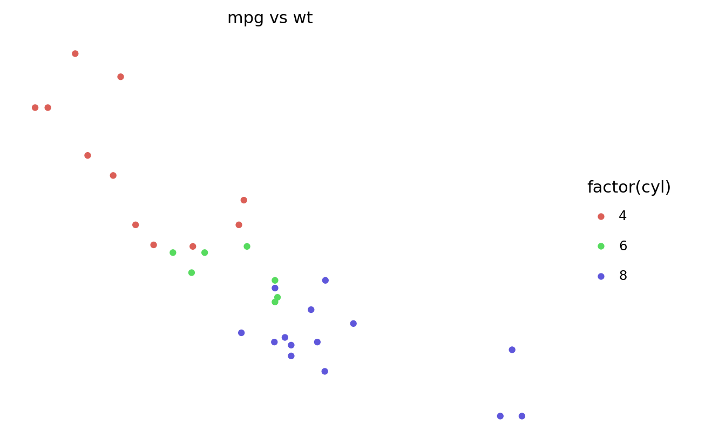
[4]:
<ggplot: (325320662)>
[5]:
p2
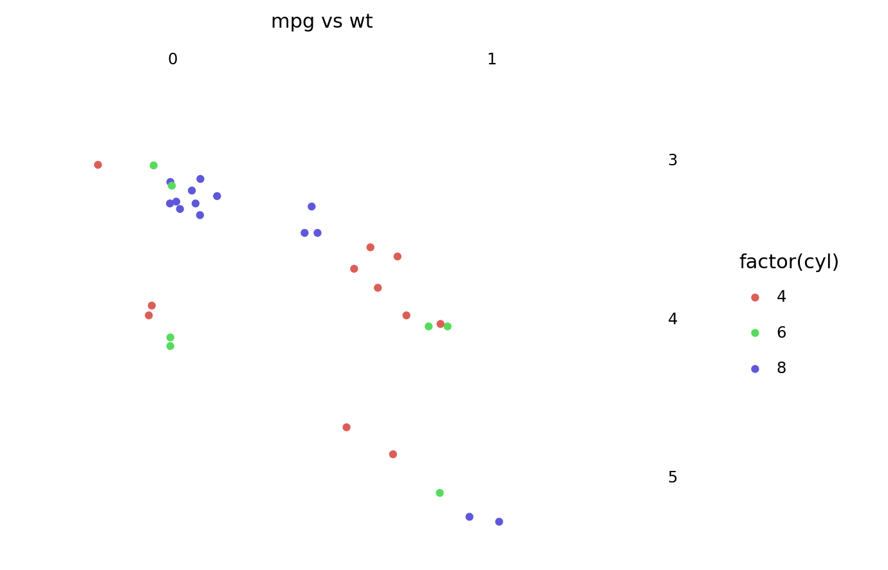
[5]:
<ggplot: (325320695)>
There are 3 main top level theming elements:
text- controls all the text elements in the figure.rect- controls all the rectangles in the figure.line- controls all the lines in the figure.
Note that none of the themeables control/modify the plotted data. e.g You cannot use text to change the appearance of objects plotted with geom_text.
text
[6]:
p1 + theme(
text=element_text(color=purple)
)
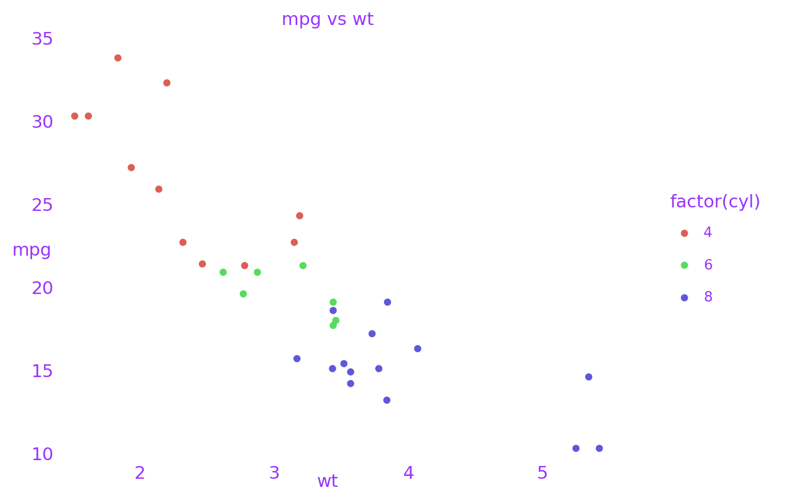
[6]:
<ggplot: (327577411)>
rect
[7]:
p1 + theme(
rect=element_rect(color=black, size=3, fill='#EEBB0050')
)
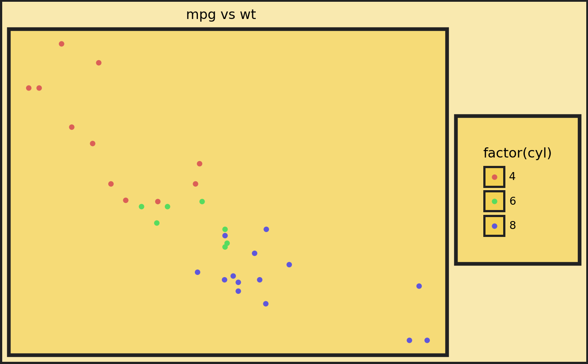
[7]:
<ggplot: (327592585)>
line
[8]:
p1 + theme(
line=element_line(color=black)
)
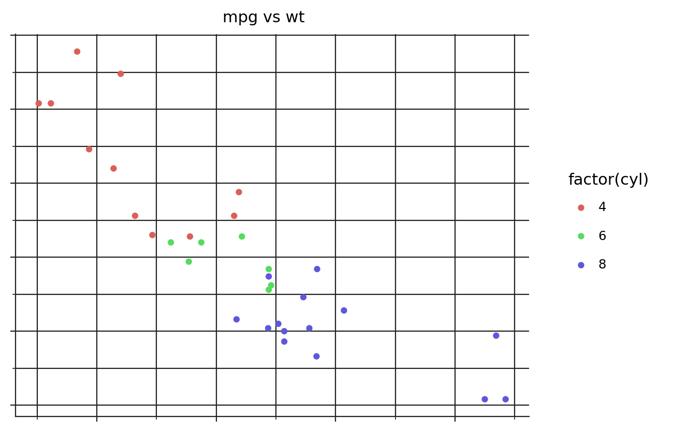
[8]:
<ggplot: (327655034)>
Theming specific items¶
axis_line and axis_text¶
[9]:
p1 + theme(
axis_line=element_line(size=2),
axis_line_x=element_line(color=red),
axis_line_y=element_line(color=blue),
axis_text=element_text(margin={'t': 5, 'r': 5}),
axis_text_x=element_text(color=black),
axis_text_y=element_text(color=purple)
)
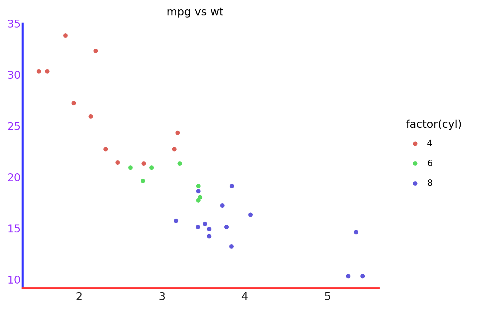
[9]:
<ggplot: (327711156)>
[10]:
p1 + theme(
axis_line=element_line(size=.7, color=gray),
# We are focusing on the ticks, make them long
axis_ticks_length=20,
axis_ticks_length_minor=10,
axis_ticks_length_major=20,
axis_ticks=element_line(size=2),
axis_ticks_major=element_line(color=purple),
axis_ticks_major_x=element_line(size=4), # override size=2
axis_ticks_major_y=element_line(color=yellow), # override color=purple
axis_ticks_minor=element_line(color=red),
axis_ticks_minor_x=element_line(), # do not override anything
axis_ticks_minor_y=element_line(color=gray), # override color=red
)
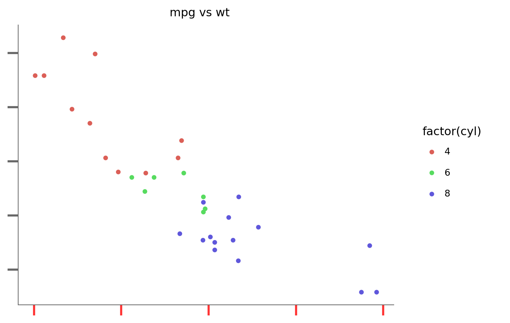
[10]:
<ggplot: (327756308)>
axis_title and axis_ticks_pad¶
[11]:
p1 + theme(
axis_line=element_line(size=.7, color=gray),
axis_ticks=element_line(),
axis_title=element_text(),
axis_title_x=element_text(color=blue),
axis_title_y=element_text(color=red),
# The gap between the title and the ticks
axis_ticks_pad=20,
axis_ticks_pad_major=20,
axis_ticks_pad_minor=20
)
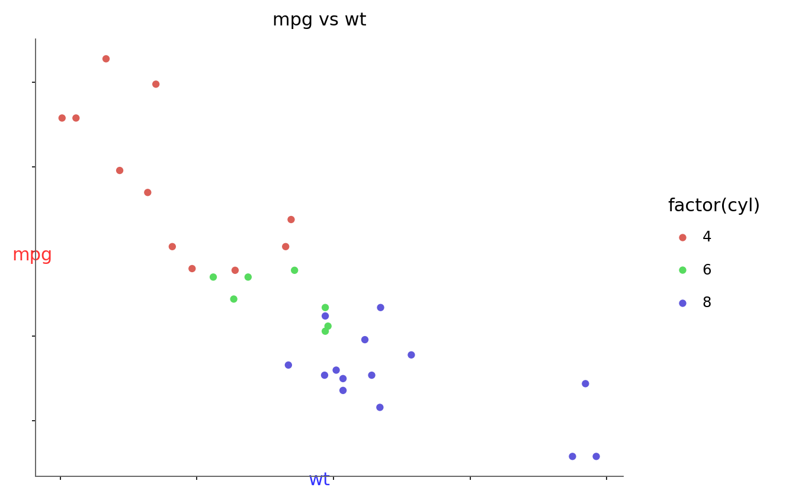
[11]:
<ggplot: (327711252)>
axis_ticks_direction¶
[12]:
p1 + theme(
axis_line=element_line(size=.7, color=gray),
axis_ticks=element_line(),
axis_ticks_direction='in',
axis_ticks_direction_x='in',
axis_ticks_direction_y='out'
)
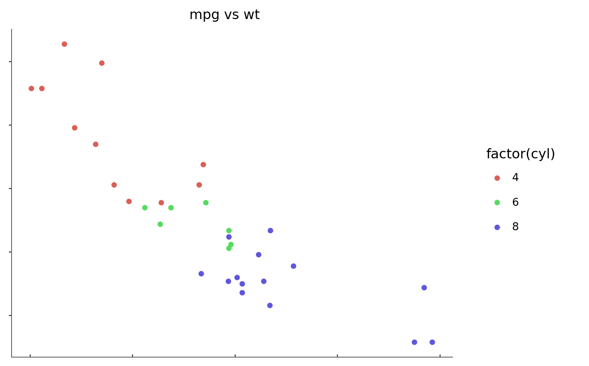
[12]:
<ggplot: (327756371)>
Legend_box¶
Not all themeables that affect the legend box are demonstrated
[13]:
(p1 + aes(fill='drat')
+ theme(
legend_position='left',
legend_direction='horizontal', # affected by the ncol=2
legend_title_align='center',
legend_box_margin=5,
legend_background=element_rect(color=purple, size=2, fill='white'),
legend_box='vertical',
legend_key=element_rect(fill=gray, alpha=.3),
legend_title=element_text(color=orange),
legend_text=element_text(weight='bold'),
legend_key_size=30, # overridden
legend_key_width=30,
legend_key_height=15,
legend_entry_spacing=10, # overridden
legend_entry_spacing_x=15,
legend_entry_spacing_y=5)
# so we can see legend_entry_spacing in action
+ guides(color=guide_legend(ncol=2))
)
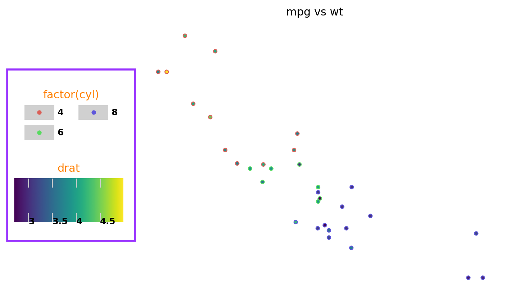
[13]:
<ggplot: (327744687)>
plot_background, panel_background and panel_border¶
[14]:
p2 + theme(
plot_background=element_rect(fill='gray', alpha=.3),
panel_background=element_rect(fill=purple, alpha=.2),
panel_border=element_rect(color=red, size=1),
panel_spacing=.25,
#panel_spacing_x=.05,
#panel_spacing_y=.25
)
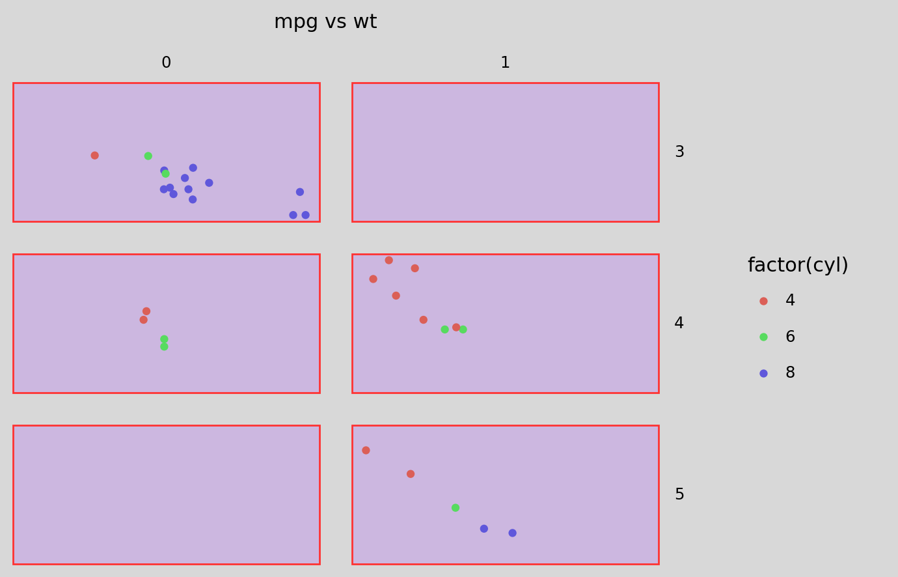
[14]:
<ggplot: (327845273)>
panel_grid¶
[15]:
p1 + theme(
panel_grid=element_line(color=purple),
panel_grid_major=element_line(size=1.4, alpha=1),
panel_grid_major_x=element_line(linetype='dashed'),
panel_grid_major_y=element_line(linetype='dashdot'),
panel_grid_minor=element_line(alpha=.25),
panel_grid_minor_x=element_line(color=red),
panel_grid_minor_y=element_line(color=green),
panel_ontop=False # puts the points behind the grid
)
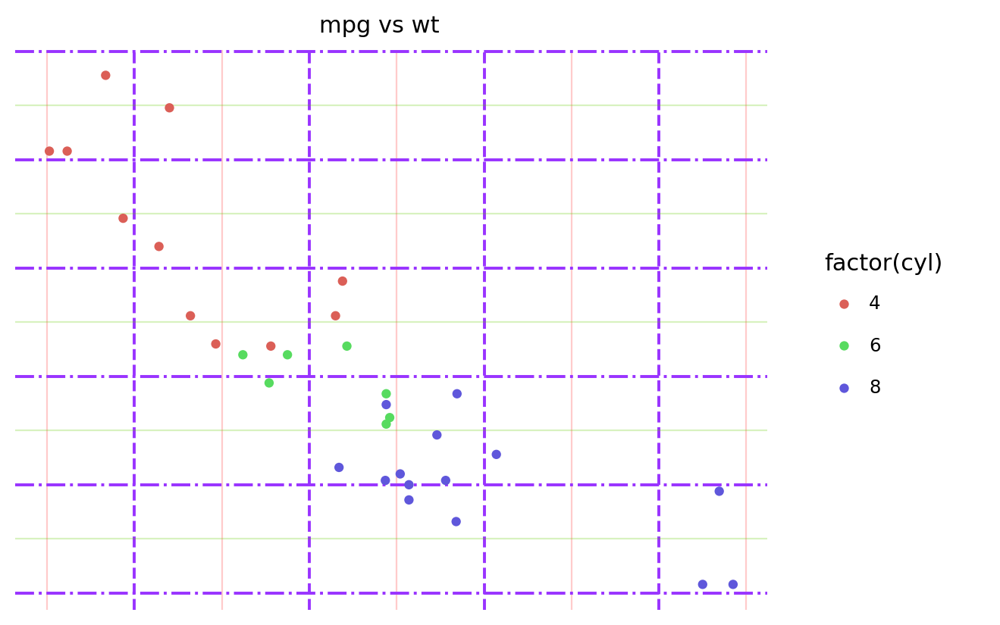
[15]:
<ggplot: (328025356)>
strip_background, strip_margin and strip_text¶
[16]:
p2 + theme(
panel_spacing=.25,
strip_background=element_rect(color=purple, fill=orange, size=1.4, alpha=.95),
strip_background_x=element_rect(x=1/6, width=2/3), # you can get really crazy
strip_background_y=element_rect(),
strip_margin=0,
strip_margin_x=0.2,
strip_margin_y=0.2,
strip_text=element_text(weight='bold'),
strip_text_x=element_text(color=red),
strip_text_y=element_text(color=blue)
)
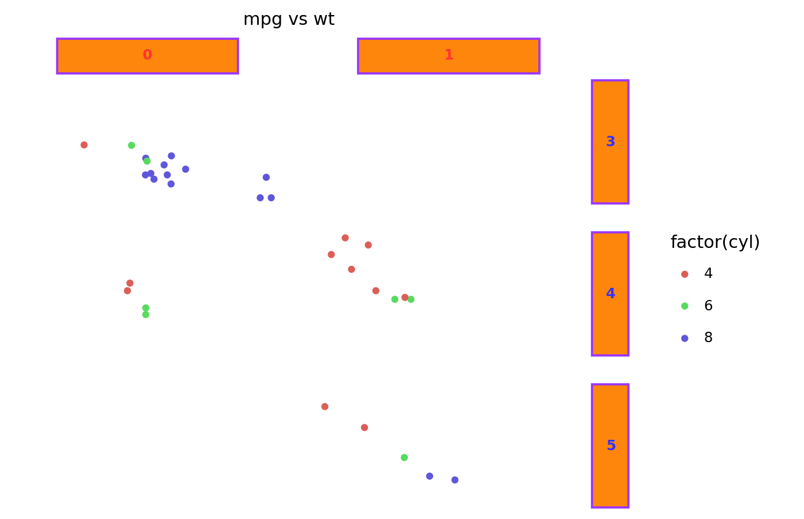
[16]:
<ggplot: (328065406)>
aspect_ratio and figure_size¶
The aspect_ratio takes precedence over the figure_size, and it modifies the height. The effective width and height are:
width = figure_size[0]
height = figure_size[0] * aspect_ratio
[17]:
p1 + theme(
panel_background=element_rect(fill=gray, alpha=.2),
#dpi=120,
figure_size=(8, 6), # inches
aspect_ratio=1/3 # height:width
)
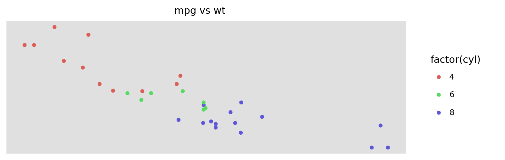
[17]:
<ggplot: (328016515)>